エントリーポイント
さて、それでは前々回セクションから説明がおざなりになっているソースコードについてお話をしていきます。
次のサンプルソースコードです。
#include <stdio.h>
int main() {
printf("Hello, World!");
//printf("ハローワールド！");
return 0;
}
コンピュータはプログラムを指示された順番通り忠実に実行します。
その開始地点は main関数 と呼ばれる部分になります。
int main() { ... }
C言語のプログラムでは基本 main関数 をソースコードの中から探し出し自動的にその地点をプログラムの開始とします。
これをプログラムの エントリーポイント と言います。
"main"という単語の後に(空っぽの)丸括弧が書かれていますが、これは関数を表す文法で「mainという名前の関数」である事を表す目的で付加されます。
単語の後に丸括弧を付けると関数が作成されます。
また関数の名前は自由に付けることができます。
printf("Hello, World!");
//printf("ハローワールド！");
return 0;
これが一連の処理の本体になります。
先ほどの出力結果をもう一度見てみましょう。
| 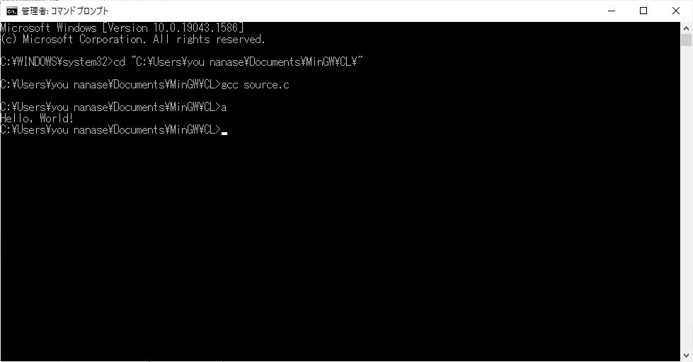 |
「Hello, World!」が出力されています。
ソースコードを見ると、どうやらダブルクォーテーションの間に同様の文字列が書かれていますよね。これがそうです。
printf([文字列])で文字が出力できます。これがかの有名な printf関数 になります。
その次の行も日本語で「ハローワールド！」と書いていますが、半角スラッシュがその前に2つあります。
これはこの一行分のソースコードを無効化する コメント の機能になります。
つまりこの一文は全て実行処理から完全にスルーされます。放置プレイです。
半角スラッシュ2つ以降の右の構文は全て無視されるのがC言語のソースコードの仕様となります。コメントはいくらでも自由に追加可能です。
最後に「return 0;」が書いてありますが、これは 戻り値 と呼ばれるものですが今は説明しません。
戻り値については別のセクションで詳しく解説します。
関数に対してほぼ必ず必要になる要素なので、いずれ関わってきます。
あとセミコロン( ; )ですが、C言語では文の最後に付けるルールとなっているので、付けましょう。
ただし中括弧の最後などには不要です。
こちらも慣れるまでは分かりにくいと思いますが、また構文ルールについて説明する時に詳しく解説します。
ここまでで一通り解説したのですが、、、え？なんか忘れてるって？
さっきから無視していましたが、「#include <stdio.h>」がありましたね。
これはちょっと難しいです。しかしこれが今回の文字出力機能の肝になるキーパーソンです。
ライブラリ
#include <stdio.h>
これは他のファイルを取り込む(インクルードする)構文です。 Preprocessor directives(プリプロセッサ・ディレクティブ) と言います。
他のファイルというとちょっとピンときませんが、これまでにもチラッと説明した ライブラリ になります。stdio.hという名前のファイルがあるのです。
このstdio.hの中に printf関数の定義 が含まれており、この一文を記述しないとprintfは使用できません(厳密には他のファイルを取り込んでも使用できる場合があります)。
また stdio.h の呼び方は「スタジオ・エイチ」ではありませんのでご注意下さい・・・(.hの拡張子については別セクション「ヘッダーファイル」で解説します)
前回のセクションで少し言いましたが、C言語にはいくつかの標準ライブラリというものが存在します。
これらのファイルは誰でも自由に使う事ができます。
標準ライブラリファイルなど他のファイルの機能を取り込む場合は「#」マークの後に「include」を書き、山括弧で括ってファイル名を記述します。
また自作した別ファイルを取り込む場合は、ダブルクォーテーションで括ってファイル名(場合によってはファイルパスを含めて)を記述する事でそのファイルを取り込む事ができます。
#include <stdlib.h>
#include "sub.h"
#include "inc/g_variable.h"
基本的に外部ファイルのインクルードは何個でも行う事ができます。
山括弧とダブルクォーテーションの違いは？ |
|
|
基本的には同じです。
逆に言うと、カレントディレクトリに置いてあるファイルを山括弧で取り込もうとするとインクルードできない事になりますね。 |
stdio.h は「スタンダードIO」を意味する単語になっています。Standard IO → stdio。
「IO」はインプット(Input)とアウトプット(Output)を意味するものです。
printf関数の他にファイルを開くfopen関数、入力文字を取得するscanf関数などがあります。
文字入出力、ファイル入出力系の処理は基本的に stdio.h をインクルードする事で作る事ができます。
最初は覚えないといけない事が多いかもしれませんが、すぐ慣れます。
特徴を掴むためには色々実験してみるのが一番です。先ほどのソースコードを適当に弄って遊んでみて下さい。
例えば次のようにしてみます。
#include <stdio.h>
int main() {
printf("While My Guitar Gently Weeps BEST SONG EVER.");
//printf("ハローワールド！");
return 0;
}
コマンドプロンプトを起動してgccでコンパイルし、実行してみます。
すると以下のようになります。
| 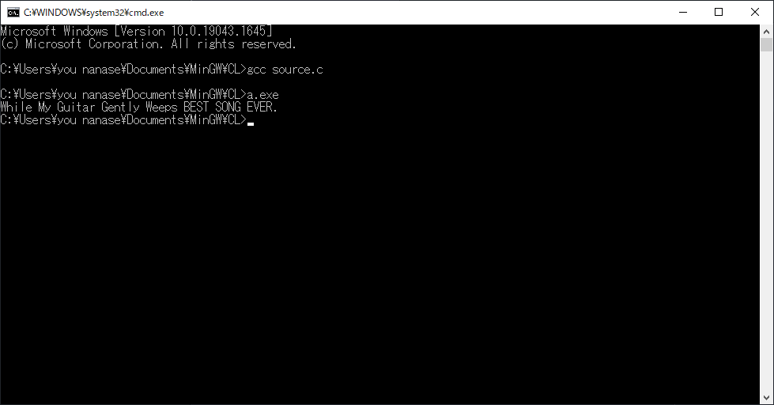 |
printf関数丸括弧の中の文字列を変更すると、文字列が変わりましたね。
では次は、コメントアウトしているすぐ下の行を出力してみたいと思います。4行目をコメントアウトして、5行目のコメントアウトを解除します。
どうなるでしょうか。
#include <stdio.h>
int main() {
//printf("While My Guitar Gently Weeps BEST SONG EVER.");
printf("ハローワールド！");
return 0;
}
| 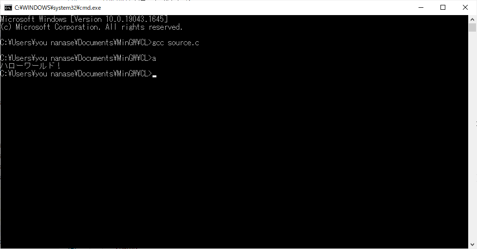 |
どうやら想定通り出力されました。
・・・とここで結果が異なっている方がもしかしたらいらっしゃるかもしれません。
もしかして以下のような文字列が生成されませんでしたか？
| 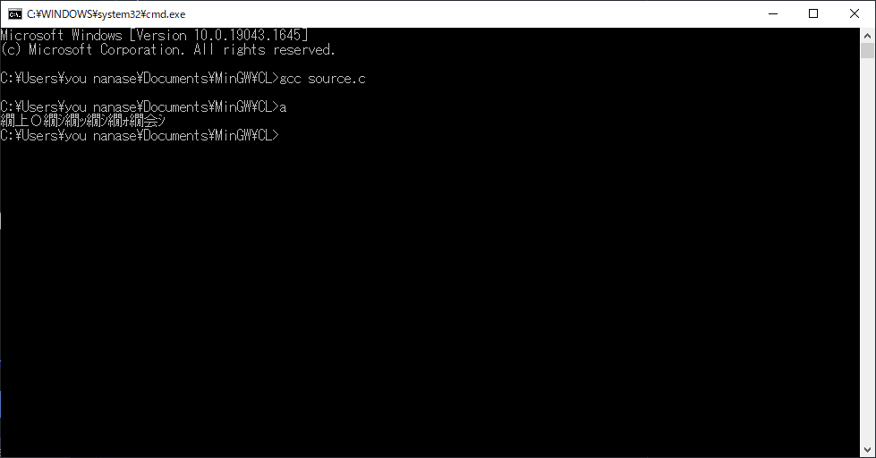 |
なにこれちょっと怖い・・・という感じかもしれませんが、まず落ち着きましょう。
このように文字が化けてしまっているのは理由があります。
それは ファイルエンコードの問題 です。
それでは少し細工をしてみましょう。
ひとまずコマンドプロンプトで「chcp 65001」と入力してEnterキーを押してください。
| 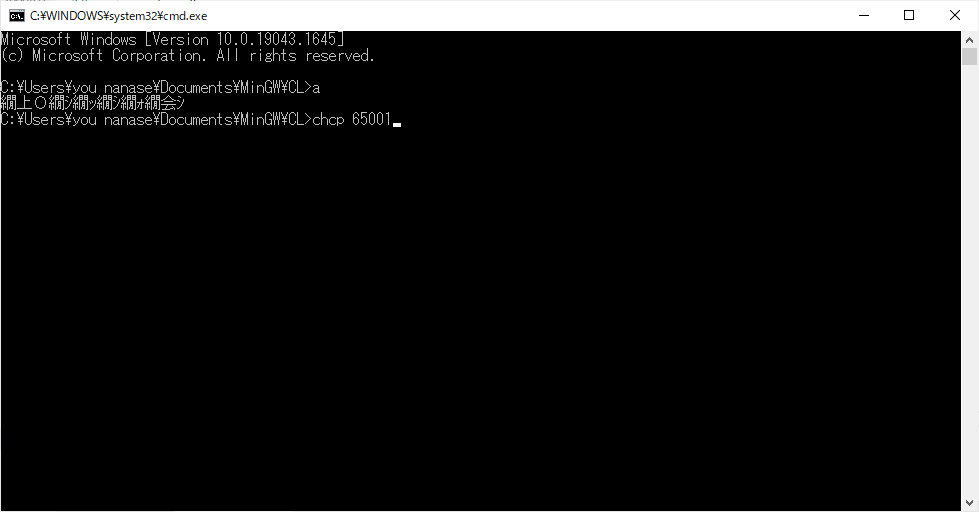 |
再度「a」→Enterキー押下でプログラムを実行します。
| 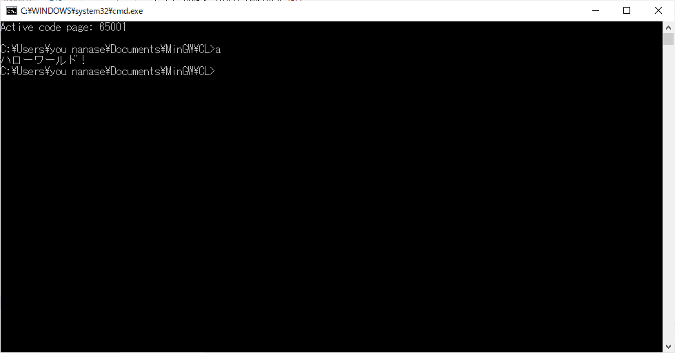 |
するとどうでしょうか。意図した通りに表示されましたね。
おっと、先ほど正常に出力されていた方が同じ事をやってしまうと今度はそちらの方々は文字化けになってしまいますので、ご注意下さい^^;
(先に言えよ！って感じですが)
それでは一体何が起きたのかを説明していきましょう。
文字コード
文字コードについてはプログラムに関わった事がない方でも知っている方がいると思います。
Shift-JISとか、UTF-8とか聞いた事ないでしょうか？
先ほどの出力結果の文字化けはいわゆるこれらの設定の問題です。
WindowsのコマンドプロンプトはShift-JIS文字列を出力するように設定されており、「chcp 65001」コマンドはこの設定をUTF-8に変更するコマンドです。
つまり文字化けした方々はコンパイルしたソースファイルがUTF-8形式で保存されているのです。
一度ソースコードをWindowsのメモ帳で起動してみます。
| 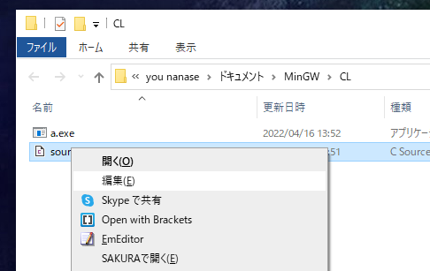 |
ソースファイルを右クリックして「編集」をクリック。
するとメモ帳でソースコードが表示されます。
| 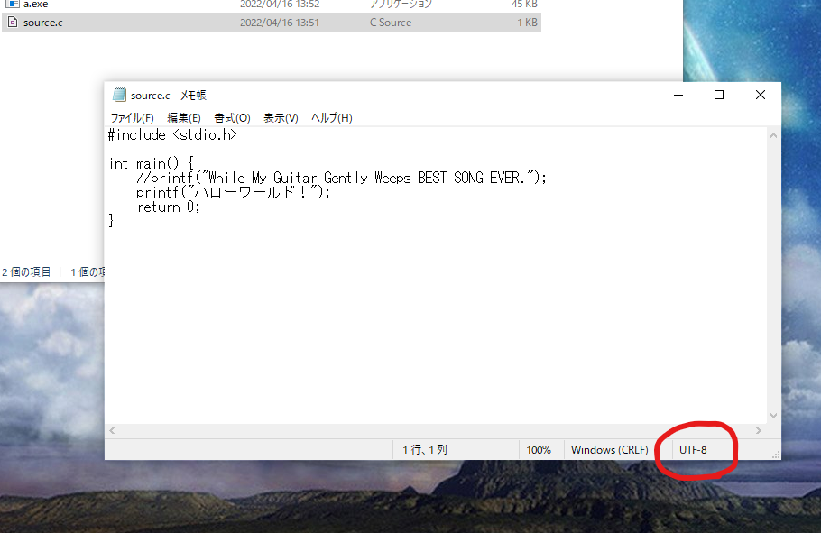 |
赤丸の箇所を見ると「UTF-8」と表示されています。
とはいえ世界的に見て プログラミングソースは大体「UTF-8」で作成されています。
それではコマンドプロンプトがShift-JISデフォルトなので、ちょっと都合が悪いですね。
一般的には「UTF-8」でソースコードを保存していって問題ありません。ではコンソールに表示する時はどうすればいいでしょうか？
これには様々な対応方法、議論があります。毎度プログラムを実行する度にコマンドプロンプトの文字コードを変更する方法もあります。しかしそれは面倒でしょ、という声もあるでしょう。
私はそもそも日本語を含む2バイト文字を極力使わずにプログラムを書くようにしていますが、もちろん日本語使いたい！という話になると思います。
しかし以前Microsoftがこのような内容の記事を投稿しました。
Windows と日本語のテキストについて（別ウインドウで開きます）
簡単に言うと外字（旧字のこと。廣(広)・邉(辺)など）は使わないようにしてね、というお願いのようです。
そして最終的にはUnicode形式の文字コードにシステムなどを移行してほしい趣旨の文になります。
結論として、どちらを使うも自由です。
しかし私個人的には「UTF-8」でソースコードを書き、なるべく出力文字などには日本語などの文字を使わないポリシーを持つようにしています。
(もちろん日本語は使ってもいいですし、使っちゃダメよという話では決してありませんので、その点はご安心下さい^^)
その他のコーディング書式について
もう少しソースコードについてお話をさせて頂きます。
まずは インデント 。
| 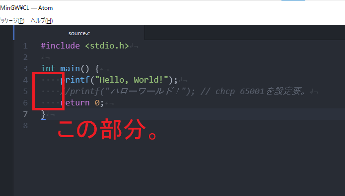 |
いわゆる字下げですね。
これは他のプログラマーも普通に行ってます。コードの見やすさが圧倒的によくなるので使いましょう。
またインデントはタブを使うか、スペースを使うかで意見が割れる事があるようですが、好きなほうを使っていいと思います。
私はタブ文字を使わずに、スペース4文字分を1インデントとしてコーディングします。
(全角スペースは使わないようにしましょう！全角スペースはスペースではないので、コンパイルエラーの要因になります)
スペース については基本的に半角スペースのみ使用する事ができます。
全角スペースは半角スペースと同じようには使う事はできませんので注意して下さい。
| 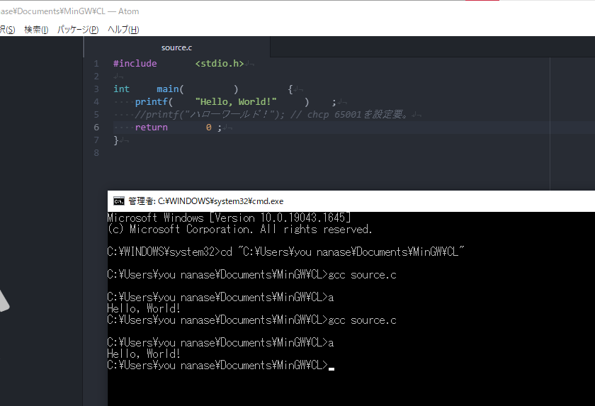 |
空白はたくさん入れて大丈夫 |
後は 改行 ですが、関数名や文字列の途中などでなければこれも問題なく使用する事ができます。
全くコンパイルや出力内容には影響ありません。
| 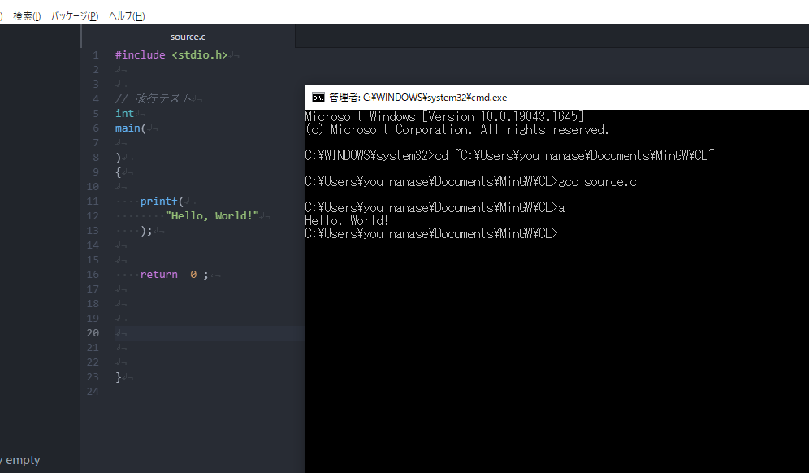 |
ただし、プリプロセッサ・ディレクティブの行は改行できませんのでその点はご注意ください。
| 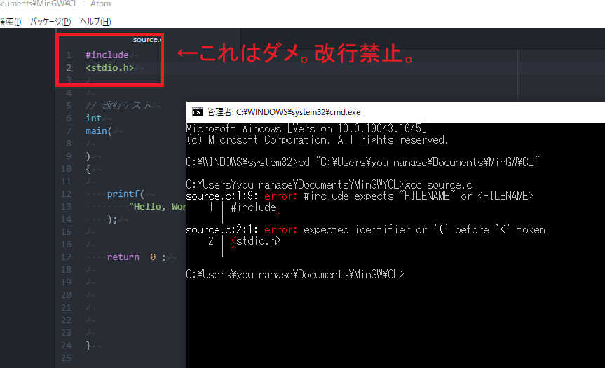 |
最後に上でもちょっとだけ説明したコメントです。
コメントでソースコードの一部を無効化する事を「コメントアウト」と言いますので、覚えておきましょう。
以下のように使う事ができます。
- 「// (コメント内容...)」でスラッシュ以降の行全体をコメントアウト
- 「/* (コメント内容...) */」でスラッシュ・アスタリスクの範囲内のみをコメントアウト
| 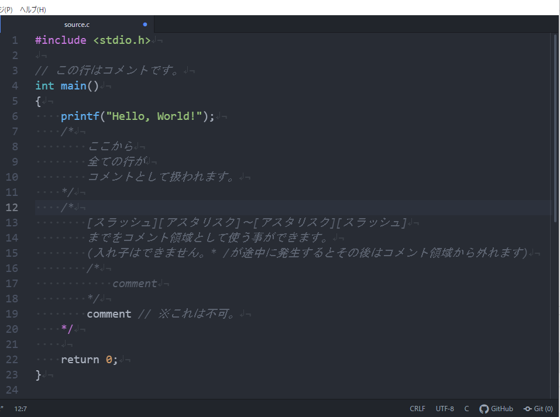 |
コラム：綺麗なソースコードを書きたい |
|
|
プログラムコーディングを行っていき段々慣れてくると、ソースコードの体裁が気になってきたりします。 |